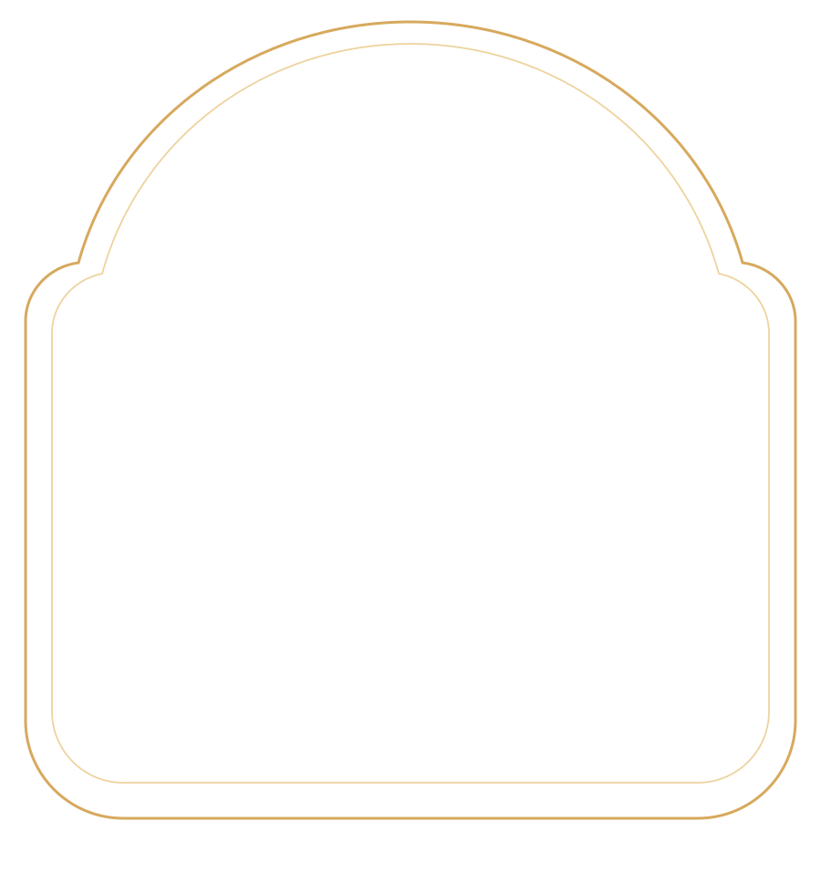
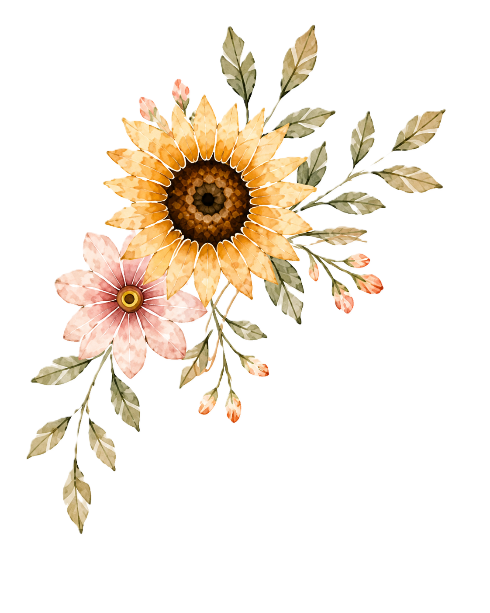
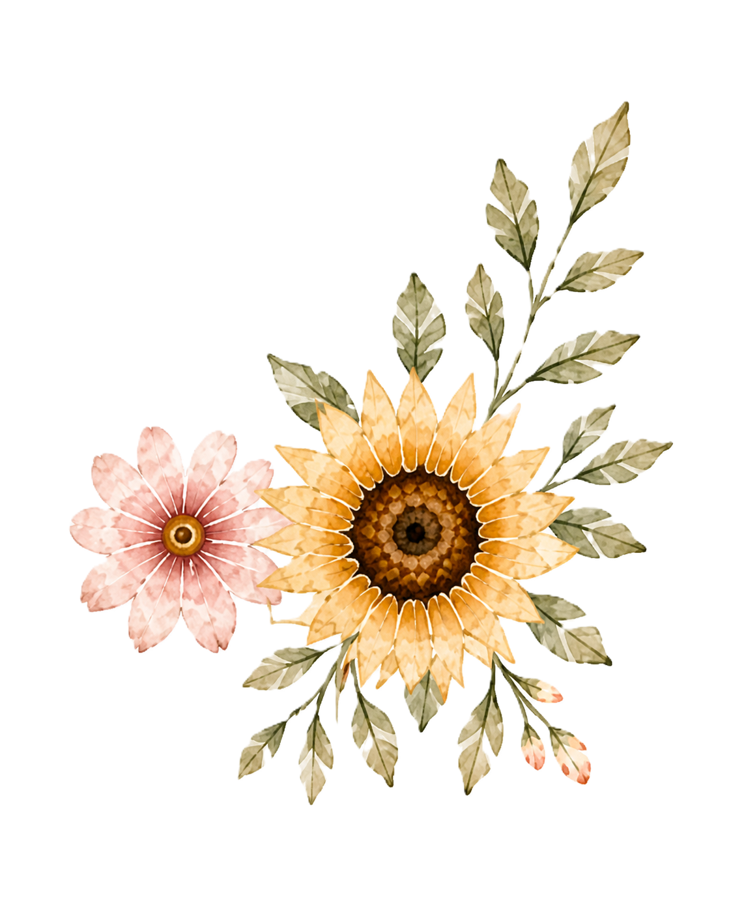
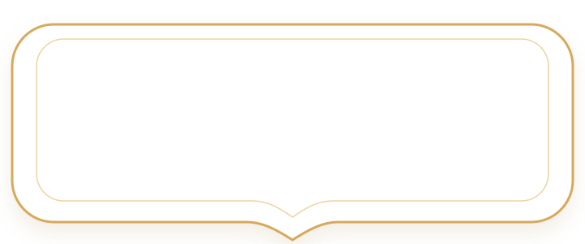

<!-- Location Section Assets Example -->
<section class="location-section">
  
  

  

  <div class="photo-wrap">
    
    
    
    
  </div>

  <div class="label-wrap">
    
    <div class="label-content">
      <h2>Sonner Café</h2>
      <p>Sa Kaeo</p>
      <a href="https://maps.google.com/?q=Sonner%20Cafe%20Sa%20Kaeo" target="_blank">Tap for Directions</a>
    </div>
  </div>
</section>

<style>
.location-section {
  position: relative;
  width: min(100%, 720px);
  margin: auto;
  padding: 40px 20px 70px;
  background: #fffaf2;
  overflow: hidden;
  text-align: center;
}
.location-title { width: 72%; max-width: 560px; margin: 0 auto 24px; display: block; }
.photo-wrap { position: relative; width: 86%; margin: 0 auto; aspect-ratio: 900 / 980; }
.photo { position: absolute; inset: 7% 6% 9%; width: 88%; height: 84%; object-fit: cover; border-radius: 44% 44% 8% 8% / 28% 28% 8% 8%; }
.photo-frame { position: absolute; inset: 0; width: 100%; height: 100%; pointer-events: none; }
.flower { position: absolute; width: 38%; pointer-events: none; }
.flower-left { left: -9%; top: -4%; }
.flower-right { right: -10%; bottom: -6%; }
.label-wrap { position: relative; width: 72%; max-width: 520px; margin: -70px auto 0; }
.label-frame { width: 100%; display: block; }
.label-content { position: absolute; inset: 18% 10%; display: grid; place-content: center; gap: 8px; color: #55705a; }
.label-content h2 { margin: 0; font-family: "Cormorant Garamond", serif; font-size: clamp(32px, 7vw, 54px); font-weight: 400; }
.label-content p { margin: 0; font-size: 22px; letter-spacing: .03em; }
.label-content a { color: #c99c52; font-style: italic; text-decoration: none; font-size: 22px; }
.leaf { position: absolute; width: 24%; opacity: .9; pointer-events: none; }
.leaf-top-left { left: -2%; top: 0; }
.leaf-top-right { right: -1%; top: 0; }
</style>
